POKÉDEX
MANUAL DE USUARIO
Guía para consultar Pokémon, revisar sus cartas del juego de cartas coleccionables (TCG) con precios en tu moneda y organizar tus colecciones y portafolios.
Contenido
1Introducción
La Pokédex es una aplicación web inspirada en el dispositivo de la serie Pokémon. Con ella puedes:
- Buscar cualquiera de los más de 1,000 Pokémon por nombre o número, o explorar la lista por tipo y por letra inicial.
- Consultar la descripción de cada uno, su especie, tipo, peso, altura, habilidades, estadísticas, cadena evolutiva y movimientos por juego.
- Escuchar su grito y verlo en su versión shiny (de color alternativo).
- Ver las cartas del juego de cartas coleccionables (TCG) de cada Pokémon con su precio de mercado, convertido a la moneda que elijas.
- Guardar tus Pokémon favoritos en colecciones y tus cartas en portafolios que calculan su valor total.
Toda la aplicación está en español y los precios se muestran en pesos mexicanos (MXN) de forma predeterminada.
De dónde vienen los datos
| Fuente | Qué aporta |
|---|---|
| PokéAPI | Pokémon, especies, habilidades, evoluciones, movimientos, imágenes y gritos. |
| TCGdex | Cartas del TCG, su información y sus precios en TCGplayer (dólares) y Cardmarket (euros). |
| ExchangeRate-API | Tipos de cambio para convertir los precios a tu moneda. |
Son servicios públicos y gratuitos. La Pokédex los consulta directamente desde tu navegador: no necesitas crear una cuenta ni iniciar sesión.
2Requisitos y acceso
Qué necesitas
- Un navegador actualizado: Chrome, Edge, Firefox o Safari, en computadora, tableta o celular.
- Conexión a internet: la información se descarga en el momento en que la consultas.
Cómo entrar
Abre la siguiente dirección en tu navegador:
https://mivanpv.github.io/diablito-systems.pokedex
No hay nada que instalar. Si quieres tenerla a la mano, agrégala a tus marcadores o, en el celular, usa la opción Agregar a la pantalla de inicio de tu navegador.
La primera vez que entras aparece un aviso de bienvenida con el botón Ver ayuda, que lleva a este manual. Ciérralo con la ✕ si no lo necesitas; no vuelve a aparecer. El manual siempre está disponible desde el botón ? AYUDA del encabezado, para leerlo en línea o descargarlo en PDF.
3Conoce la pantalla
Toda la Pokédex funciona en una sola pantalla. En una computadora se ve así:
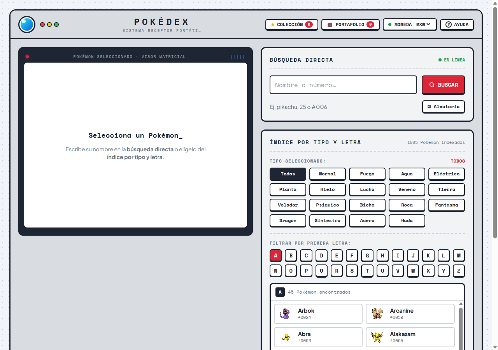
- Encabezado, en la parte superior.
- Visor del Pokémon (izquierda): el marco oscuro donde aparece el Pokémon que selecciones. Mientras no elijas ninguno, muestra «Selecciona un Pokémon».
- Búsqueda directa (derecha, arriba): para ir directo a un Pokémon por nombre o número.
- Índice por tipo y letra (derecha, abajo): para explorar la lista de Pokémon con filtros.
El encabezado
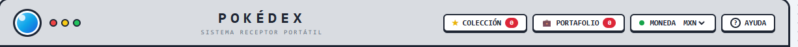
- Logotipo «POKÉDEX»: haz clic en él para volver a la pantalla inicial.
- ★ COLECCIÓN: abre tus colecciones de Pokémon. El número rojo indica cuántos Pokémon tienes guardados (ver capítulo 8).
- 💼 PORTAFOLIO: abre tus portafolios de cartas. El número rojo indica cuántas cartas tienes guardadas (ver capítulo 9).
- ? AYUDA: abre la página de ayuda, donde puedes leer este manual en línea o descargarlo en PDF. Desde ahí también puedes ir directo a cualquier tema.
- MONEDA MXN: elige la moneda en la que se muestran los precios de las cartas. Puedes elegir MXN, USD, EUR, GBP, JPY, CAD, ARS, CLP, COP o PEN. Tu elección se recuerda para la próxima visita. El punto verde indica que los tipos de cambio se cargaron bien; si aparece amarillo, no se pudieron obtener y los precios se muestran en su moneda original.
4Buscar un Pokémon
4.1 Búsqueda directa
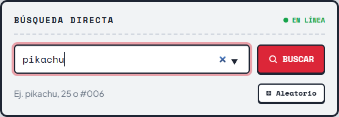
- Escribe en el campo «Nombre o número…» el nombre del Pokémon (por ejemplo, pikachu) o su número de la Pokédex (25 o #025).
- Mientras escribes, el navegador te sugiere nombres; puedes elegir uno de la lista.
- Presiona Enter o el botón BUSCAR. El Pokémon aparece en el visor.
El botón ⚄ Aleatorio abre un Pokémon al azar de toda la Pokédex.
El indicador de la esquina derecha muestra el estado de la conexión: EN LÍNEA cuando la lista de Pokémon ya se cargó, CONECTANDO mientras se carga y SIN CONEXIÓN si no se pudo cargar.
Si el nombre o el número no existen, el visor muestra «¡Pokémon no encontrado!». Revisa lo que escribiste e inténtalo de nuevo.
4.2 Índice por tipo y letra
El índice te permite explorar la Pokédex sin conocer el nombre del Pokémon.
- Elige un tipo: Todos (predeterminado), Normal, Fuego, Agua, Eléctrico, Planta, etc. El tipo elegido se resalta en azul marino y su nombre aparece en rojo junto a «Tipo seleccionado».
- Elige la primera letra del nombre. La letra activa se resalta en rojo. Las letras sin Pokémon del tipo elegido aparecen deshabilitadas.
- En la lista de resultados aparecen todos los Pokémon que cumplen ambos filtros, con su imagen y su número. Desplázate dentro de la lista para verlos todos.
- Haz clic en un Pokémon para abrirlo en el visor. El seleccionado se resalta en azul marino.
Siempre hay una letra seleccionada (la A al principio). Si cambias a un tipo que no tiene Pokémon con esa letra, el índice salta automáticamente a la primera letra disponible.
En la parte superior derecha se muestra el total de Pokémon indexados.
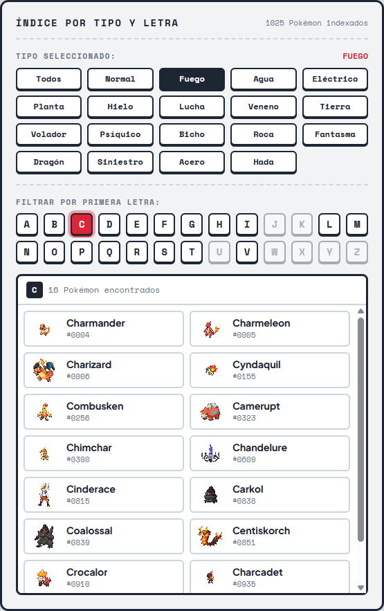
5El visor del Pokémon
Al seleccionar un Pokémon, el visor muestra su ficha completa:
- Nombre en español y número de la Pokédex (en rojo, a la derecha).
- 🔈 reproduce el grito actual del Pokémon y 8-bit, cuando existe, su grito clásico de los primeros juegos. Mientras suena, el botón parpadea. El sonido se detiene al cambiar de Pokémon.
- ☆ Agregar a Favoritos lo guarda en una colección (ver capítulo 8).
- Escenario con la imagen del Pokémon y sus tipos en la esquina superior izquierda.
- ⇄ Evoluciones y ★ Shiny, descritos a continuación.
- Pestañas con la información detallada (capítulo 6).
- Botones ◄ #0005 y #0007 ► en la parte inferior, para ir al Pokémon anterior o siguiente por número.
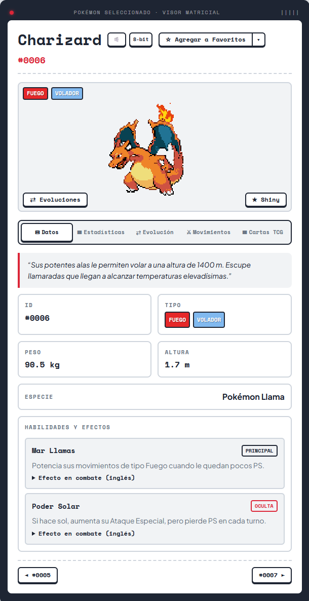
Versión shiny
Presiona ★ Shiny para ver al Pokémon con su coloración alternativa. Vuelve a presionarlo para regresar a la normal. La opción se mantiene activa mientras pasas de un Pokémon a otro. Si un Pokémon no tiene imagen shiny, el botón no aparece.
Burbujas de evolución
Haz clic sobre la imagen del Pokémon o en ⇄ Evoluciones. Alrededor aparecen burbujas con sus evoluciones: las anteriores a la izquierda (marcadas con ◄) y las siguientes a la derecha (marcadas con ►). Haz clic en una burbuja para abrir ese Pokémon. Para cerrarlas, presiona Esc o haz clic en cualquier otra parte del escenario.
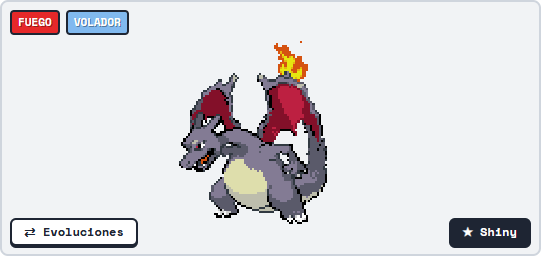
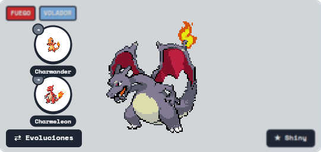
6Las pestañas de información
Debajo del escenario hay cinco pestañas. La pestaña que elijas se mantiene al cambiar de Pokémon, y también al abrir una carta y regresar.
6.1 Datos
Es la pestaña predeterminada (figura 5). Muestra:
- La descripción del Pokémon, tomada de los juegos.
- Su ID, tipo, peso (kg), altura (m) y especie (por ejemplo, «Pokémon Llama»).
- Habilidades y efectos: el nombre y la descripción de cada habilidad. La etiqueta PRINCIPAL o OCULTA indica su tipo. Despliega «Efecto en combate (inglés)» para leer el efecto técnico, disponible solo en inglés.
6.2 Estadísticas
Muestra las seis estadísticas base del Pokémon con una barra proporcional: PS, Ataque, Defensa, Ataque Esp., Defensa Esp. y Velocidad. Al final aparece la suma Total.
Te sirven para comparar Pokémon: por ejemplo, Charizard destaca en Ataque Especial (109) y Velocidad (100).
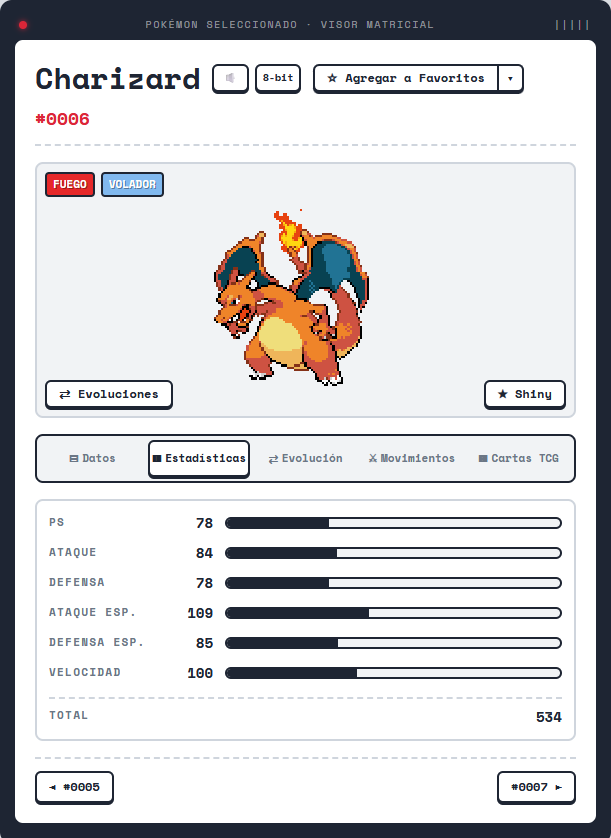
6.3 Evolución
Presenta la cadena evolutiva completa, por etapas. Cada Pokémon lleva una etiqueta:
- ANTERIOR: etapas previas al Pokémon actual.
- ACTUAL: el Pokémon que estás viendo, resaltado en oscuro.
- PRÓXIMA: sus siguientes evoluciones.
Las evoluciones de otras ramas (por ejemplo, las demás evoluciones de Eevee) aparecen atenuadas. Bajo cada nombre se indica la condición para evolucionar, como el nivel («Nv. 36»).
Haz clic en cualquier etapa para abrir ese Pokémon. Si no tiene evoluciones, se indica en la pestaña.
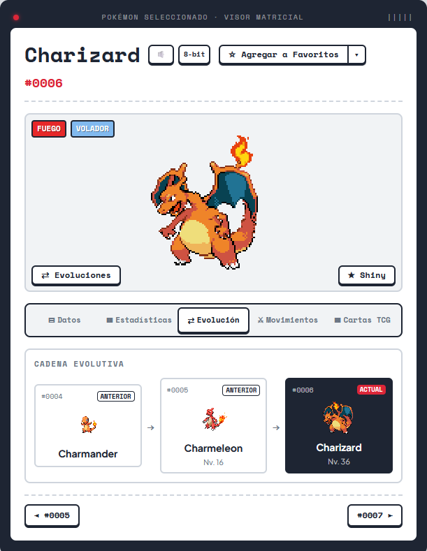
6.4 Movimientos
- En Juego, elige la edición (por ejemplo, Escarlata/Púrpura). Se preselecciona el juego más reciente en el que aparece el Pokémon.
- Elige el método de aprendizaje: Por nivel, MT (máquina técnica), Huevo o Tutor. El número indica cuántos movimientos hay en cada uno.
- En cada movimiento ves su nivel (en «Por nivel»; «Evo.» significa que lo aprende al evolucionar), su clase (Físico, Especial o Estado), potencia, precisión, PP y tipo.
- Haz clic en un movimiento para desplegar su descripción y sus detalles: prioridad, probabilidad de efecto y efecto técnico (en inglés).
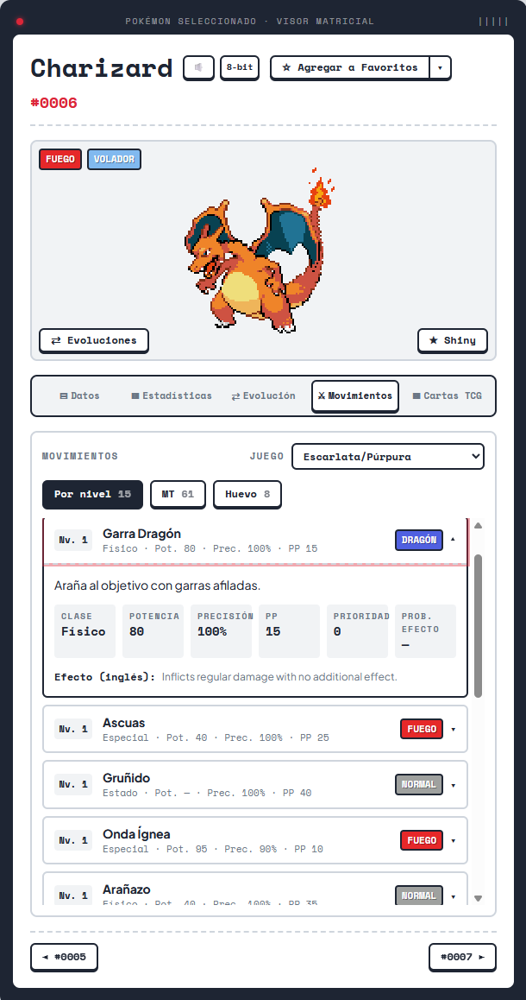
6.5 Cartas TCG
Muestra las cartas del juego de cartas coleccionables de ese Pokémon. Se explica en detalle en el siguiente capítulo.
7Cartas TCG y precios
En la pestaña Cartas TCG verás las cartas del Pokémon, con el total encontrado a la derecha del título. Cada carta muestra:
- Su imagen, su nombre y su código (edición y número).
- Mercado: el precio de mercado actual.
- Rango mín – máx: los precios más bajo y más alto registrados.
- El botón ＋ Agregar a… para guardarla en un portafolio (capítulo 9).
Se muestran 12 cartas a la vez; presiona Ver más cartas ▼ para cargar más.
Algunas cartas, sobre todo las de promociones o ediciones especiales, pueden aparecer con «Sin imagen» o «Sin precio» cuando la fuente de datos no tiene esa información.
Si no hay cartas en español para un Pokémon, se muestran las ediciones en inglés y se indica con un aviso.
¿De dónde salen los precios?
- Se usa el precio de TCGplayer (mercado de Estados Unidos, en dólares) y, si no lo hay, el de Cardmarket (mercado europeo, en euros).
- Los precios se convierten automáticamente a la moneda elegida en el encabezado, con los tipos de cambio del día.
- Pasa el cursor sobre el precio para ver la fuente y la moneda original.
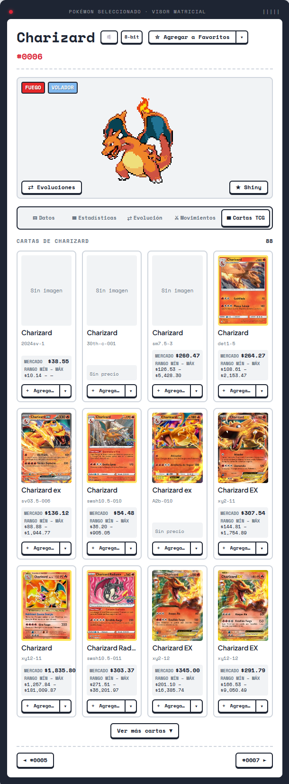
Detalle de una carta
Haz clic en una carta para abrir su ficha completa:
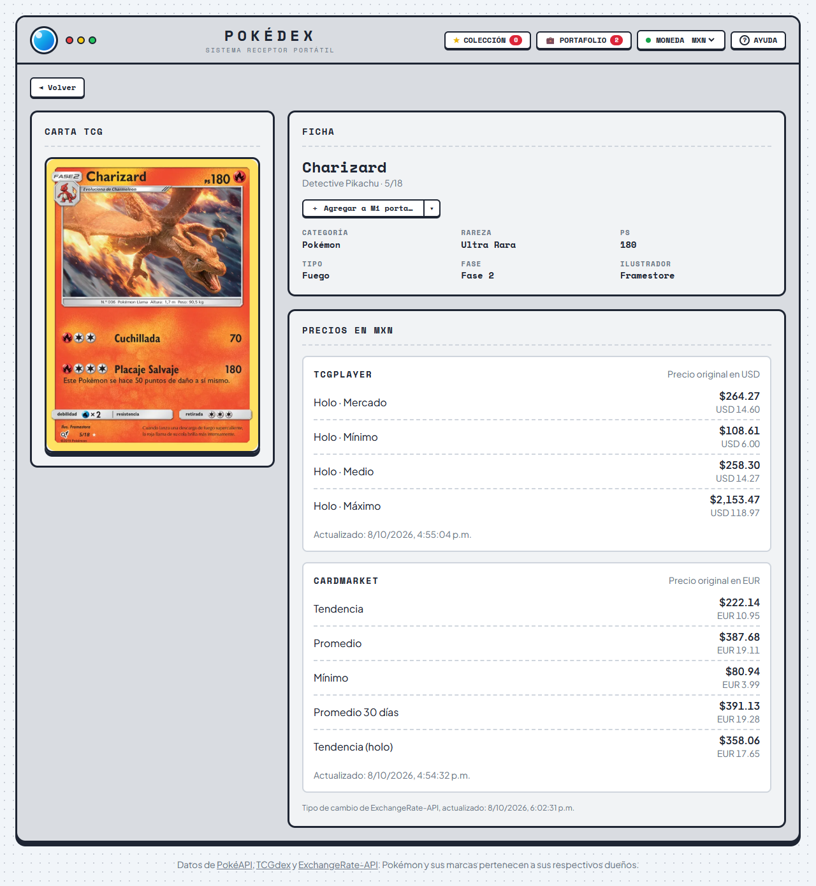
- Carta TCG: la imagen en alta resolución.
- Ficha: nombre, edición y número, botón para agregarla a un portafolio, y sus datos (categoría, rareza, PS, tipo, fase e ilustrador).
- Precios: todos los precios disponibles en TCGplayer (por variante: normal, holo, reverse holo…) y en Cardmarket (tendencia, promedio, mínimo, promedio de 30 días…). Cada precio aparece convertido a tu moneda y, debajo, en su moneda original. También se indica la fecha de actualización de los precios y del tipo de cambio.
Presiona ◄ Volver para regresar exactamente a donde estabas: el mismo Pokémon, en la pestaña Cartas TCG y con tus filtros.
8Mis colecciones
Las colecciones son listas de Pokémon que tú armas: tus favoritos, tu equipo, los que te faltan por atrapar, etc. Siempre existe la lista Favoritos, que no se puede eliminar.
Guardar un Pokémon
En el visor, junto al nombre del Pokémon, está el botón de guardar. Tiene dos partes:
- Parte principal (☆ Agregar a Favoritos): guarda el Pokémon en la lista actual con un solo clic. El botón se vuelve amarillo y cambia a ★ En Favoritos. Si lo presionas de nuevo, el Pokémon se quita de esa lista.
- Flecha ▾: abre un menú con todas tus listas. Marca o desmarca las casillas para guardar el Pokémon en varias listas a la vez. Al final del menú puedes escribir el nombre de una lista nueva y presionar + Crear: se crea la lista y el Pokémon se guarda en ella.
La etiqueta ACTUAL indica la lista que usará el botón principal: es la última en la que guardaste un Pokémon.
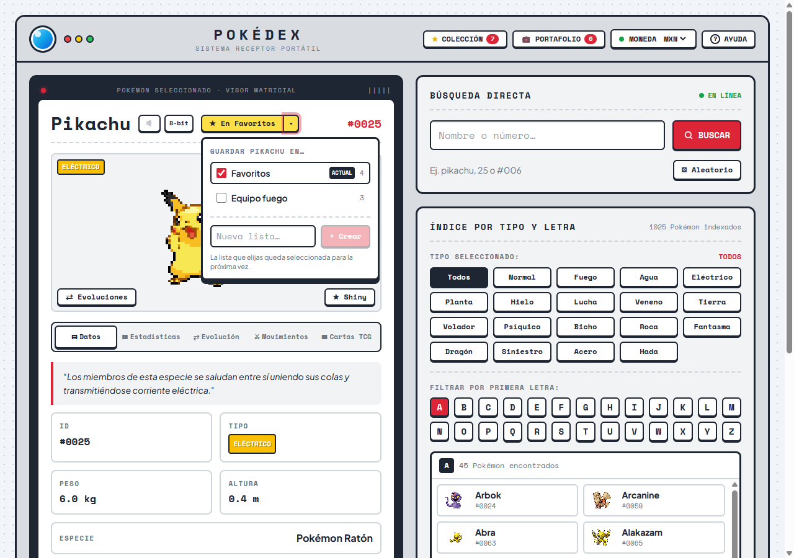
Administrar tus colecciones
Presiona ★ COLECCIÓN en el encabezado para ver todas tus listas:
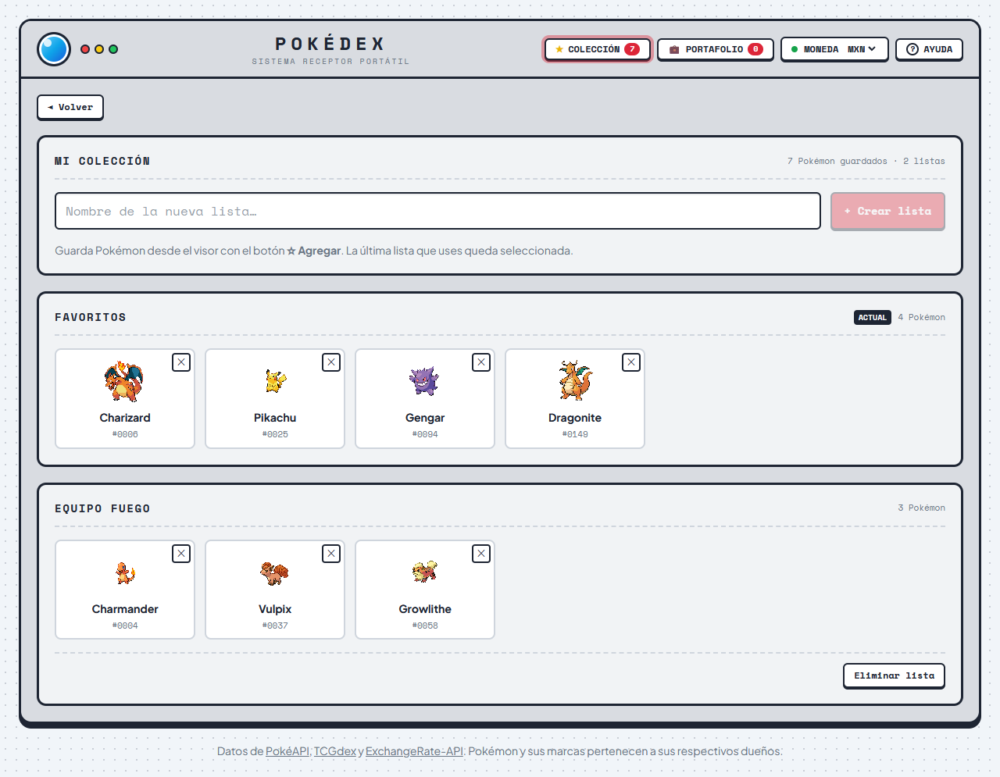
- Crear una lista: escribe el nombre en el campo superior y presiona + Crear lista. Si ya existe una lista con ese nombre, se usa la existente.
- Abrir un Pokémon: haz clic en su tarjeta.
- Quitar un Pokémon: presiona la ✕ en la esquina de su tarjeta.
- Eliminar una lista: presiona Eliminar lista y confirma con Sí, eliminar. Esta acción no se puede deshacer.
9Mis portafolios de cartas
Los portafolios funcionan igual que las colecciones, pero guardan cartas TCG con su cantidad y calculan cuánto vale tu colección de cartas. Siempre existe el portafolio Mi portafolio, que no se puede eliminar.
Agregar una carta
Cada carta de la pestaña Cartas TCG, y la página de detalle de cada carta, tiene el botón ＋ Agregar a Mi portafolio:
- La parte principal agrega la carta al portafolio actual. El botón cambia a ✓ En Mi portafolio; presiónalo de nuevo para quitarla.
- La flecha ▾ abre el menú para elegir otros portafolios o crear uno nuevo.
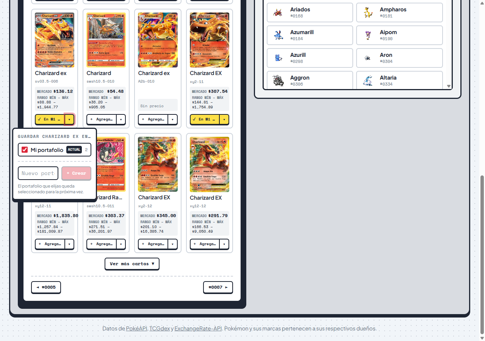
Consultar el valor de tus cartas
Presiona 💼 PORTAFOLIO en el encabezado:
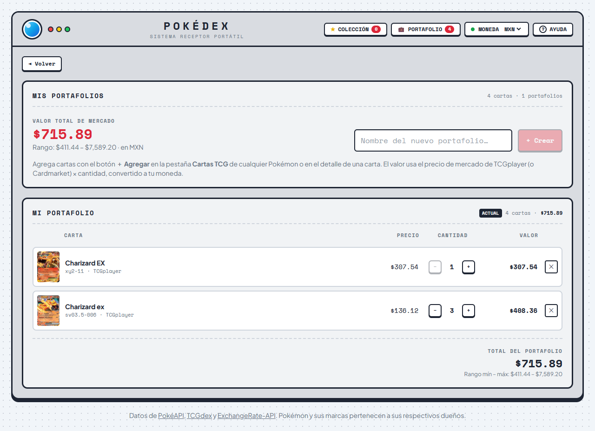
- Valor total de mercado: la suma de todos tus portafolios, con el rango mínimo y máximo, en la moneda elegida.
- En cada portafolio, cada fila muestra la carta, su precio unitario, la cantidad y el valor (precio × cantidad). Al pie se muestran el total del portafolio y su rango.
- Usa − y + para cambiar la cantidad de copias, de 1 a 999.
- Presiona la ✕ para quitar una carta, o el nombre de la carta para abrir su detalle.
- Para crear un portafolio, escribe su nombre y presiona + Crear. Para eliminarlo, usa Eliminar portafolio y confirma.
Las cartas sin precio no se suman al total, y se indica cuántas son. Si cambias la moneda en el encabezado, todos los valores se recalculan al momento.
10Uso en el celular
La Pokédex se adapta a pantallas pequeñas. En el celular el orden cambia: primero aparecen la búsqueda directa y el índice, y debajo el visor. Cuando eliges un Pokémon, la pantalla se desplaza sola hasta el visor.
Las pestañas del visor se acomodan en dos columnas, y en el encabezado los botones Colección y Portafolio muestran solo su icono y su contador.
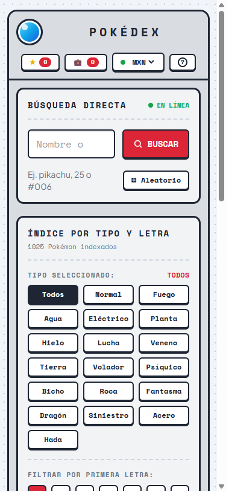
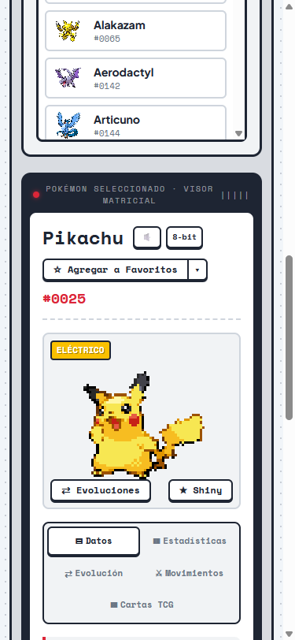
11Preguntas frecuentes y solución de problemas
| Situación | Qué hacer |
|---|---|
| Aparece «¡Pokémon no encontrado!». | Revisa el nombre (en inglés, como en el índice) o busca por número. |
| La búsqueda dice «SIN CONEXIÓN» o aparece «Error de lectura». | Revisa tu conexión a internet y recarga la página. Si persiste, el servicio de datos puede estar temporalmente fuera de línea; inténtalo más tarde. |
| No se escucha el grito, o el botón está deshabilitado. | Revisa el volumen. En Safari no se pueden reproducir: usa Chrome, Edge o Firefox. Si aparece «No se pudo reproducir», inténtalo de nuevo. |
| Una carta dice «Sin precio» o «Sin imagen». | La fuente de datos no tiene esa información para la carta. No es un error de la aplicación. |
| Los precios están en otra moneda o el punto de MONEDA es amarillo. | No se pudieron obtener los tipos de cambio; se muestran los precios originales (USD o EUR). Recarga la página más tarde. |
| Mis colecciones o portafolios desaparecieron. | Se guardan solo en el navegador donde los creaste. Verifica que uses el mismo navegador y equipo, y que no estés en una ventana privada. Si borraste los datos de navegación del sitio, no se pueden recuperar. |
| ¿Puedo compartir lo que estoy viendo? | Sí. Copia la dirección del navegador: incluye el Pokémon, la pestaña abierta y los filtros del índice. |
| ¿Necesito una cuenta? | No. La Pokédex no tiene registro ni inicio de sesión, y no envía tus colecciones a ningún servidor. |
¿Dónde encuentro este manual?
La primera vez que entras a la Pokédex aparece este aviso. Ver ayuda te lleva a la página de ayuda y la ✕ lo cierra para siempre.
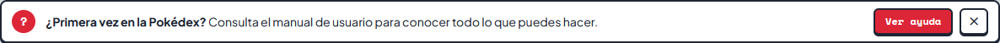
En cualquier momento puedes abrir la ayuda con el botón ? AYUDA del encabezado. Ahí eliges cómo consultar el manual:
- Leer en línea: se abre en una pestaña nueva y se adapta al celular. Desde la barra superior puedes volver a la Pokédex o descargar el PDF.
- Descargar PDF: para guardarlo, imprimirlo o leerlo sin conexión.
- Ir directo a un tema: abre el manual en línea justo en el capítulo que elijas.
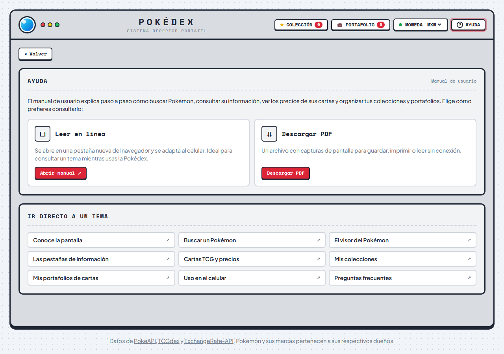
Créditos
Datos de PokéAPI, TCGdex y ExchangeRate-API. Pokémon y sus marcas pertenecen a sus respectivos dueños. Esta aplicación es un proyecto independiente, sin afiliación con Nintendo, Game Freak ni The Pokémon Company.